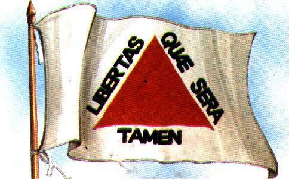

Biografia de Tiradentes
Tiradentes (1746-1792) foi o líder da Inconfidência Mineira, primeiro movimento de tentativa de libertação colonial do Brasil.
Ganhou a vida de diferentes maneiras, além de militar no posto de Alferes, foi tropeiro, minerador, comerciante e se dedicou também às práticas farmacêuticas e ao exercício da profissão de dentista, o que lhe valeu o apelido de Tiradentes.
Tiradentes, apelido de Joaquim José da Silva Xavier, nasceu na Fazenda do Pombal, no município hoje chamado Ritápolis, em Minas Gerais, no dia 12 de novembro de 1746.
O dia 21 de abril, dia da sua morte, é feriado nacional.
A Infância e Juventude do Herói Nacional
José da Silva Xavier era filho do português Domingos da Silva Santos, que se dedicava à mineração, e da brasileira Maria Antônia da Encarnação Xavier.
Foi o quarto filho entre sete irmãos. Com nove anos, Joaquim José ficou órfão de mãe e aos onze perdeu o pai.
Sobre o Apelido de Tiradentes
Tiradentes foi criado na casa do padrinho, o cirurgião Sebastião Ferreira Leite, que era especialista em arrancar dentes.
José Joaquim não fez os estudos regulares e trabalhou como mascate e minerador. Aprendeu a arrancar dentes com o padrinho.
Tornou-se sócio de uma botica de assistência à pobreza na ponte do Rosário, em Vila Rica e se dedicou também às práticas farmacêuticas e ao exercício da profissão de dentista, o que lhe valeu o apelido de Tiradentes.
A decadência da mineração
Tiradentes trabalhou no transporte de mercadorias entre Minas Gerais e o Rio de Janeiro com uma tropa de burros.
Nessa época o auge da mineração de Minas Gerais já havia passado e os portugueses acusavam o povo da colônia de burlar a coroa, quando estes diziam que as minas estavam esgotadas.
O Cargo de Alferes
Em dezembro de 1775, Tiradentes entrou para o Exército Colonial na 6.ª Companhia de Dragões da Capitania de Minas Gerais. Como era descendente de português teve o privilégio de ingressar nas armas já como oficial, sem passar pelos postos subalternos.
Tornou-se alferes e, em 1781, foi nomeado comandante da Patrulha do Caminho Novo, que ligava Minas Gerais ao Rio de Janeiro, por onde passava toda a produção de ouro e diamantes com destino ao porto, rumo a Portugal.
A Cobrança do Reino
Tiradentes começou a sentir a pressão do reino. Portugal exigia que grandes recursos humanos fossem aplicados exclusivamente na mineração, proibindo o estabelecimento de engenhos na região de Minas e punindo todos os contrabandistas.
Não só os mineiros, mas toda a população era obrigada a pagar elevados impostos, o que promovia um descontentamento geral.
Primeiras Ideias de Rebelião
Em 1787, Tiradentes pediu licença da cavalaria e seguiu para o Rio de Janeiro onde foi tentar vida nova. Elaborou projetos para construir armazéns no cais, para proteção e guarda das mercadorias, e projetou a canalização dos rios Andaraí e Maracanã para melhoria do abastecimento de água da cidade e aguardava a liberação do financiamento.
Tiradentes permaneceu um ano na capital. Nessa época, já pregava a liberdade da colônia. Em setembro de 1788, procurou o filho do capitão-mor da Vila Rica, José Álvares Maciel, que chegara recentemente da Europa e também alimentava os sonhos da independência.
A Organização dos Conspiradores
Em dezembro de 1788, terminada a licença, Tiradentes regressa a Minas Gerais. A chegada de um novo governador para a colônia, Luís Antônio Furtado de Mendonça (o Visconde de Barbacena), trazendo a incumbência de decretar a derrama, ou seja, a cobrança de todos os impostos atrasados, intensificou ainda mais o sonho de liberdade.
Tiradentes passou a fazer propaganda, em Vila Rica e os seus arredores, a favor da independência do Brasil. A primeira reunião dos conspiradores ocorreu na casa do Tenente-Coronel Paula Freire.
A eles uniram-se o Padre Carlos Correia de Toledo e Melo - vigário de São João del-Rei, homem rico e influente -, e pessoas de certa projeção social, como Cláudio Manuel da Costa, poeta e antigo secretário de governo, Tomás Antônio Gonzaga, poeta e ex-ouvidor da Comarca e Inácio José de Alvarenga Peixoto, minerador.
Os Planos Para Tomar o Poder
A Inconfidência Mineira, como ficou conhecida a rebelião - já que os revoltosos estavam negando fidelidade à Coroa portuguesa -, foi planejada. Um projeto de constituição chegou a ser efetivamente redigido.
A nova capital, sugerida pelos inconfidentes, deveria ser São João del-Rei.
Tiradentes propõe que a bandeira da Nova República seja um triângulo vermelho com fundo branco, simbolizando a Santíssima Trindade. Alvarenga sugere a inscrição tomada ao poeta latino Virgílio: “Libertas quae sera tamen” – “Liberdade ainda que tardia”.

O Delator e a Procura por Tiradentes
No dia 15 de março de 1789, o coronel Silvério dos Reis, fazendeiro e minerador, introduzido no movimento, delata a conspiração em troca do perdão para as suas dívidas.
Nessa época, Tiradentes encontrava-se no Rio de Janeiro em busca de conquistar novos adeptos à causa revolucionária.
No dia 1 de maio, Silvério chega ao Rio, em busca de Tiradentes.
A Prisão de Tiradentes
No dia 10 de maio de 1789, a casa de Domingos Fernandes da Cruz, onde Tiradentes se encontrava, foi cercada e Tiradentes foi preso.
Dias depois, em Vila Rica, os seus companheiros também foram detidos, e iniciou-se a investigação e o processo dos acusados. No dia 4 de julho, Cláudio Manuel da Costa foi encontrado enforcado na cela.
A condenação de Tiradentes
No dia 22 de maio, na primeira audiência da devassa, Tiradentes é interrogado. No dia 18 de janeiro de 1790, diante do quarto interrogatório, Tiradentes confessa a conspiração e assume toda a responsabilidade, como comprovam as atas do processo.
No dia 19 de abril de 1792, os inconfidentes receberam as suas penas: onze condenações à morte, cinco a degredo perpétuo e várias condenações à prisão. Todos perderam os seus bens.
A Morte de Tiradentes
No dia 20 de abril, a rainha D. Maria I concede a comutação da pena de enforcamento a todos os indiciados, exceto a Tiradentes.
Tiradentes foi enforcado no Largo da Lampadosa, no Rio de Janeiro, no dia 21 de abril de 1792. O seu corpo foi esquartejado, a sua cabeça exposta em Vila Rica e os seus membros espalhados em postes no caminho entre Minas e Rio de Janeiro.